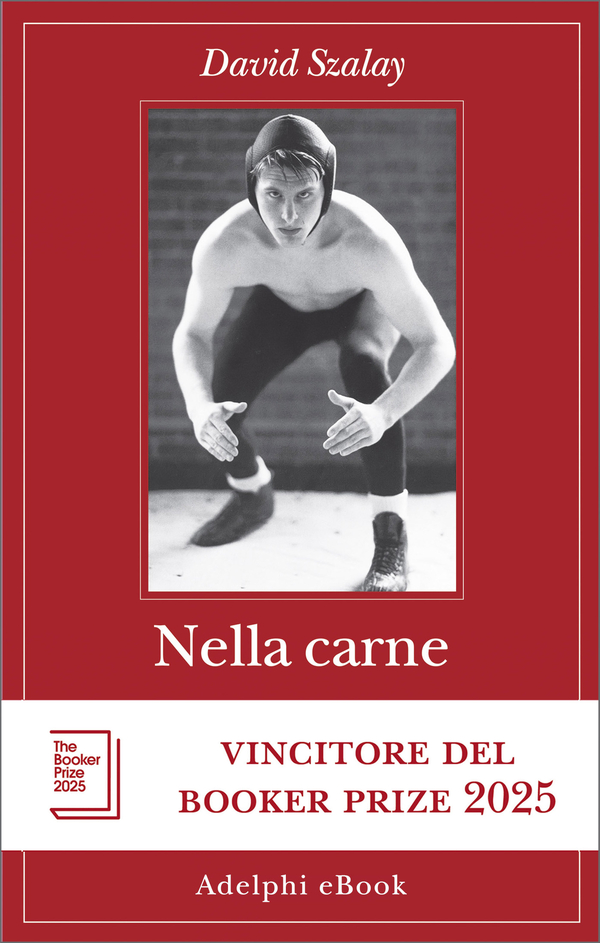
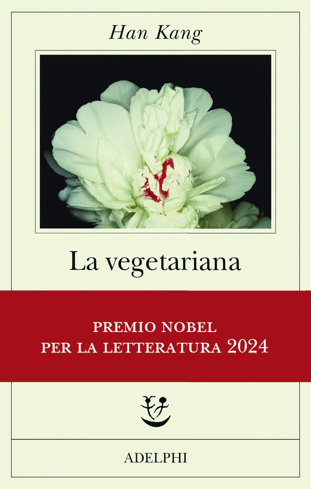
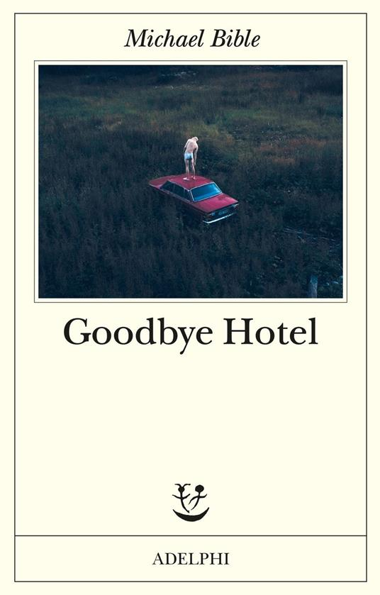
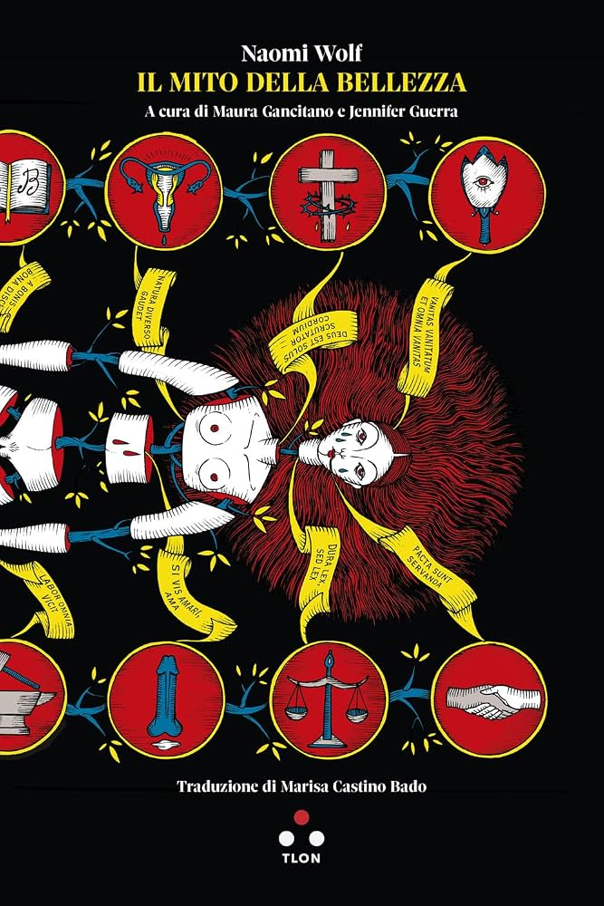
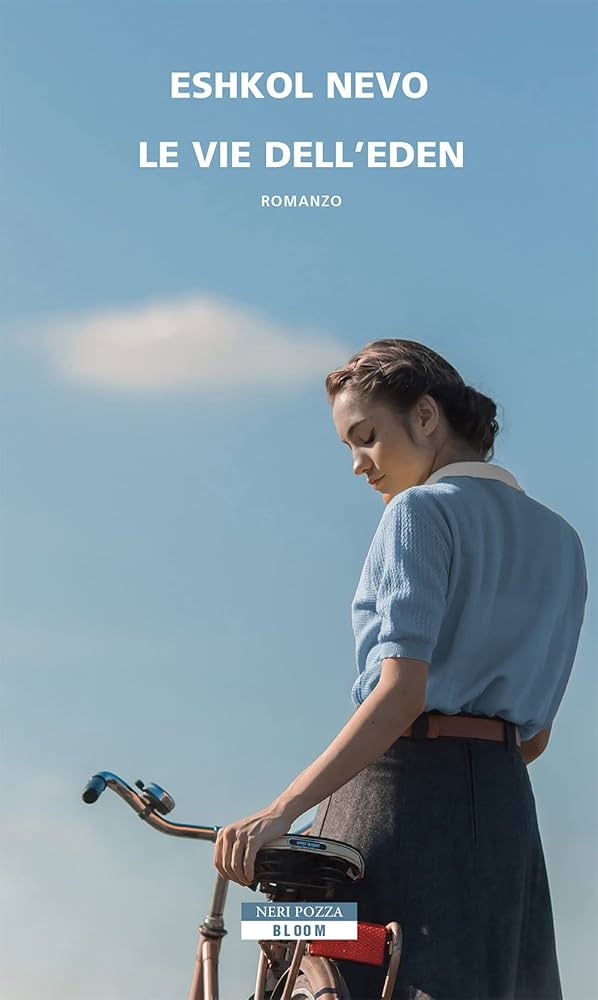
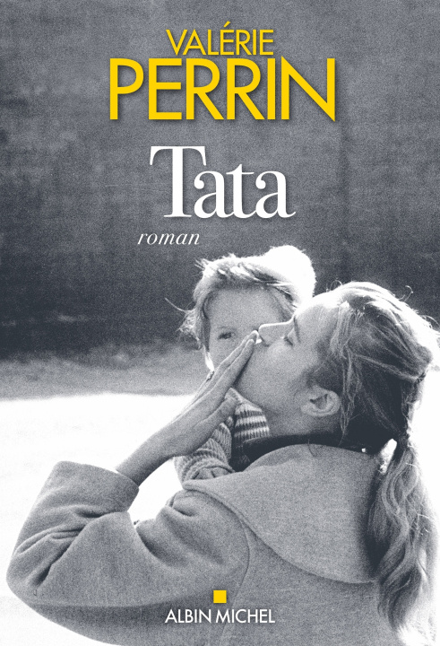
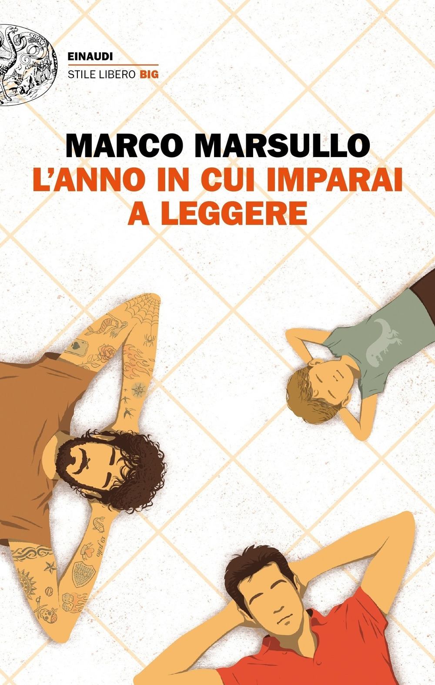
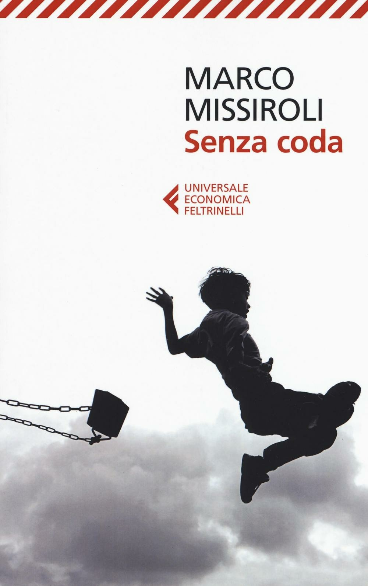
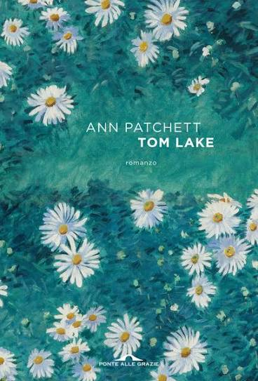

Su di me
Su di me
Ciao, sono Eleonora, service e graphic designer. Dopo un percorso universitario in Design e Advanced Design, ho sviluppato un approccio progettuale sistemico, capace di integrare strategia, ricerca e comunicazione.
Il service design mi ha insegnato a strutturare sistemi complessi, coordinando competenze interdisciplinari e trasformando bisogni e insight in soluzioni concrete e funzionali.
Mi occupo di organizzare processi, definire connessioni e dare coerenza all’intero ecosistema progettuale.
La grafica è lo strumento attraverso cui questi sistemi prendono forma e voce. Per me non è solo estetica, ma un mezzo strategico: traduce complessità in messaggi chiari, coinvolgenti e capaci di generare interesse, consapevolezza e dialogo. Progetto esperienze che funzionano, ma soprattutto che comunicano valore.
Le CianoTipe
Durante l’ultimo tirocinio universitario presso il laboratorio artistico culturale Checkpoint Charly, ho conosciuto la cianotipia, una tecnica di stampa a mano che permette di sviluppare fotografie e oggetti con l’ausilio della luce del sole o raggi UV. Con Arianna, appassionata quanto me, abbiamo dunque deciso di far conoscere questa tecnica a più persone possibili, dai bambini agli anziani. Grazie a workshop e piccoli progetti artigianali, stiamo promuovendo in giro per le città, l’idea di manualità come strumento di connessione.
Cucito e fotografia
Il design ha sempre influenzato molti aspetti della mia vita, sin dal liceo, quando ho scelto di seguire il corso di moda. Imparando a cucire, ancora oggi, posso integrare questa disciplina all’interno dei miei progetti: come rilegature nell’editoria, per lo sviluppo di materiali di exhibition, packaging, altre ancora solo per creare qualcosa da indossare vantandomi di averlo fatto con le mie mani.
Crescendo, ho seguito la passione per la fotografia di mio padre. La macchinetta mi ha sempre accompagnata in numerose giornate noiose. Anch’essa è diventata fondamentale, poi, per il lavoro che ho scelto di seguire.
Libri ed editoria
Un ramo del design che mi ha sempre attirata particolarmente è quello editoriale. Sono sempre stata un’amante di libri, di tutti i tipi. Faccio parte di un bookclub fondato con un mio amico, che unisce persone della piccola frazione balneare di Rimini, Miramare. Questa passione mi ha inevitabilmente portata alla sperimentazione di impaginazioni, rilegature e stampe artigianali a mano.
Ultime letture del bookclub che consiglio
-
Nella carneDavid Szalay

-
La vegetarianaHan Kang

-
Goodbye HotelMichael Bible

I miei libri preferiti
-
Il mito della bellezzaNaomi Wolf

-
Le vie dell’EdenEshkol Nevo

-
Figlia del temporaleValentina D’Urbano
-
FolliaPatrick McGrath

-
TatàValérie Perrin

-
L’anno in cui imparai a leggereMarco Marsullo

-
Senza codaMarco Missiroli

-
Tom LakeAnn Patchett
